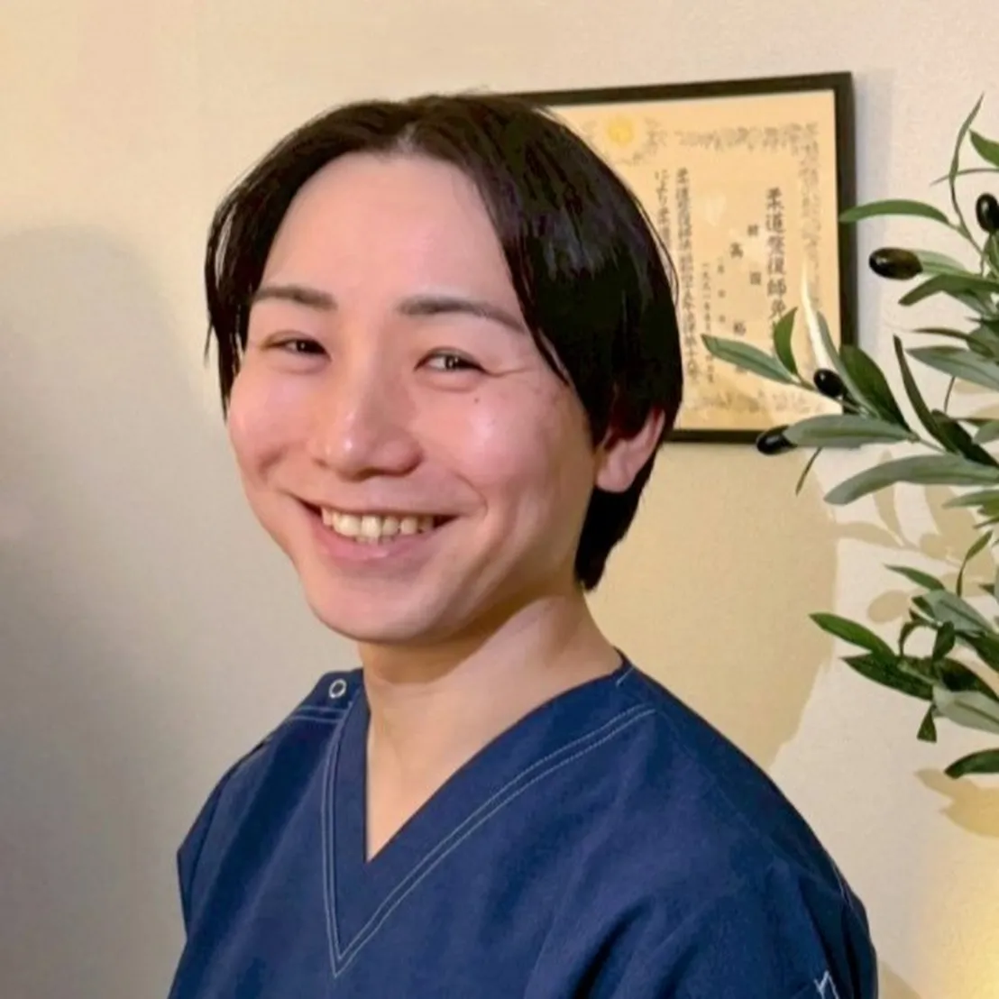
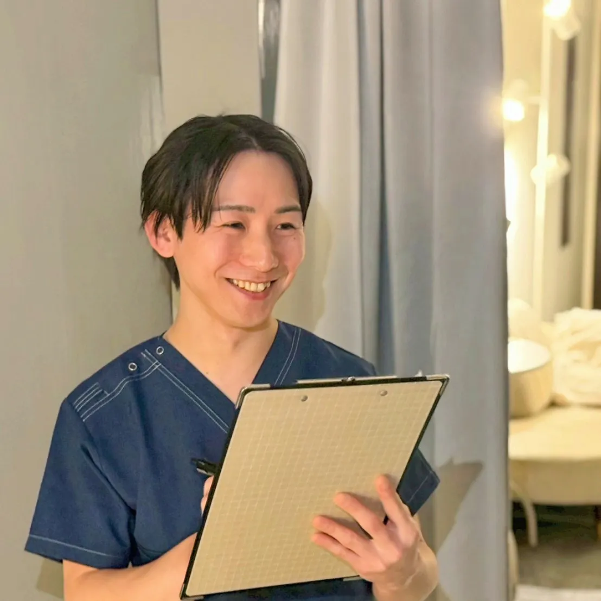
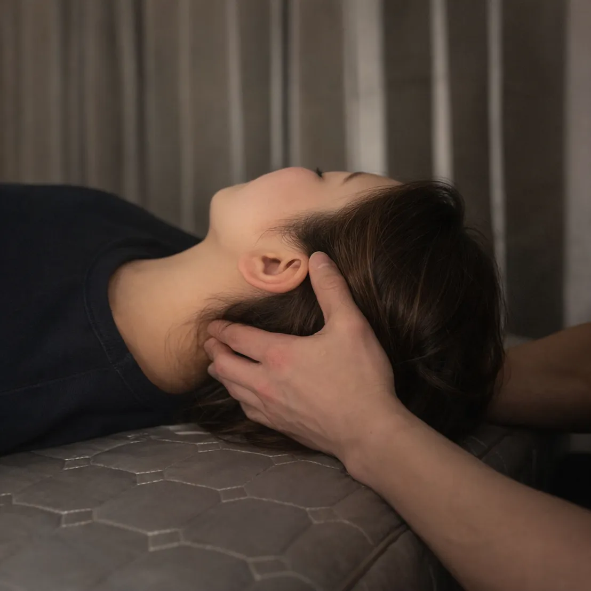
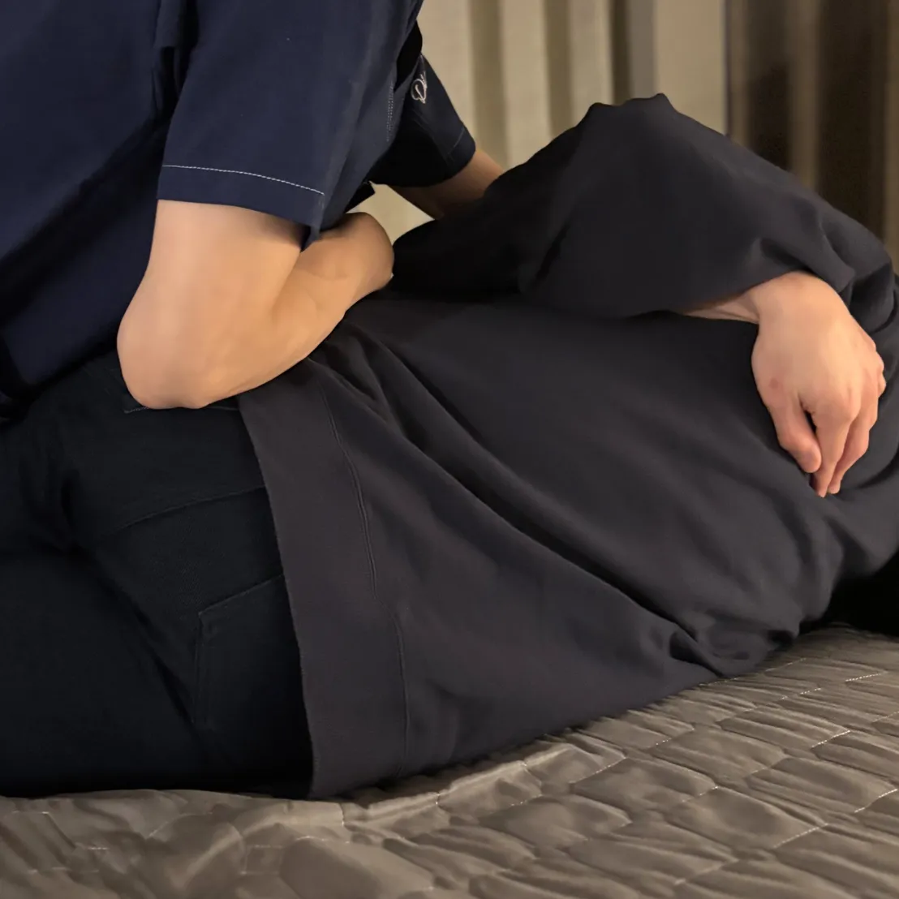

自律神経の働きに着目し、
身体全体の調整機能を整える施術を行っています。

慢性的な不調は、見た目には分かりにくく、 周囲にも理解されにくいことがあります。 だからこそ私は、 症状だけを見るのではなく、 身体全体の状態とその背景を丁寧に確認しながら、 安心して通える施術を大切にしています。
はじめまして。 大阪 自律神経専門整体院 gene（ジーン）の高田裕基と申します。

私は国家資格である柔道整復師として、関東・大阪に複数店舗を展開する自律神経調整に特化した整骨院グループに8年間在籍し、院長として新人教育・技術指導・院の運営に携わってきました。 そこでは、アトピー性皮膚炎・めまい・耳鳴り・不眠症・パニック障害など、自律神経の乱れから生じるさまざまな症状で悩まれている多くの患者さまを担当してきました。 多くの方々が、 「自分で調べても何を信じていいかわからない」 「病院では薬が出るだけで根本解決には至らない」 「周りに相談しても理解してもらえない」 と、不安を抱えながら生活されています。 その方々の症状が改善していく中で、 「先生に診てもらえて本当によかった」 「もっと早く来ればよかった」 「整体でここまで変わると思っていなかった」 と、ありがたいお言葉をいただくたびに、この仕事の意義と責任を深く感じてきました。 私自身、姉が重度のアトピーで長年苦しんでいました。 現在は治療の成果もあり薬に頼らず安定した状態を保っていますが、姉の子ども2人もアトピー体質で悩んでおり、現在も治療を続けています。 アトピーや自律神経の乱れからくる症状には、生活習慣だけでなく遺伝的要素も大きく関わります。 だからこそ大阪 自律神経専門整体院 geneでは、 「本質＝gene」 を理解し、 「遺伝子＝gene」 レベルで体質を整え、 「根本＝gene」 から再発しない身体へ導く 唯一の整体院を目指しています。 本気で体質を変えたい方、これ以上同じ悩みを繰り返したくない方は、ぜひ一度ご相談ください。 あなたの未来が変わるきっかけになればと思います。
自律神経は、呼吸・循環・消化・体温調整・睡眠など、生命活動の基盤を担う調整機能です。 強いストレスや生活リズムの乱れが続くと、 交感神経と副交感神経の切り替えがうまくいかなくなり、局所的な症状として現れることがあります。 皮膚症状、不眠、めまい、動悸、慢性的な疲労。 これらは単独の問題ではなく、 身体全体の調整機能の乱れとして捉える必要があります。 部分的な対処ではなく、 神経系・呼吸・筋緊張・循環の連動を整える。 その視点から施術を組み立てています。

当院では、強い刺激や矯正を主とする方法は行っていません。 自律神経のバランスは、過度な刺激によって一時的に変化しても、身体が防御反応を起こせば元に戻ってしまうことがあります。 重要なのは、 「今の身体にとって適切な刺激量」を見極めることです。 筋緊張の状態、呼吸の深さ、皮膚の緊張度、脈の反応などを確認しながら、 神経系に過負荷をかけない範囲で調整を行います。 その結果として、 徐々に身体が本来の調整機能を取り戻していくことを目指します。
まずは現在の状態を整理するところからでも大丈夫です。 お気軽にご相談ください。
LINEで相談するこれまで多くの方と向き合う中で感じてきたのは、「症状は結果である」ということです。 睡眠の質が下がる。 呼吸が浅くなる。 慢性的に力が抜けない。 そうした変化が積み重なり、 やがて明確な不調として表面化します。 だからこそ、 症状の出ている部位だけを見るのではなく、 身体全体の連動性を確認することを重視しています。
症状が出ている場所だけではなく、 身体全体のつながりを見ながら整えていくことを大切にしています。
専門性を追求する一方で、 私が最も大切にしているのは“安心感”です。 理論があっても、 安心できる空間でなければ身体は緩みません。 無理な通院の提案はしません。 必要以上に不安をあおることもありません。 現在の状態を正直に共有し、 現実的な見通しをお伝えします。
初めての来院は不安があって当然です。 「病院では異常がないと言われた」 「どこに相談すればいいか分からない」 そのような方こそ、一度ご相談ください。 身体の状態を丁寧に確認し、 今何が起きているのかを一緒に整理していきます。 初めての整体は不安もあると思いますが、 無理な施術や通院の強制は一切ありませんのでご安心ください。
自律神経は目に見えない調整機能ですが、 身体の反応には必ず現れます。 焦らず、過度な刺激に頼らず、 整う方向へ導いていく。 その過程を、責任を持って支えていきます。 まずはお気軽にご相談ください。